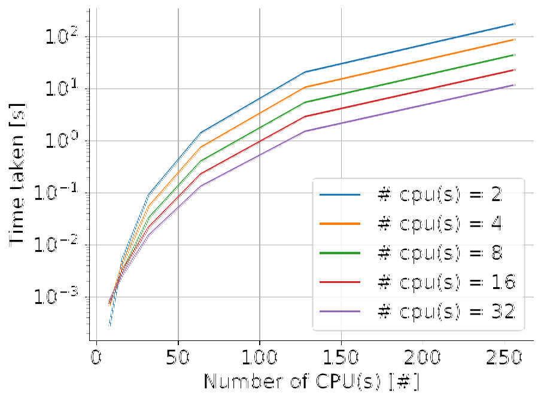
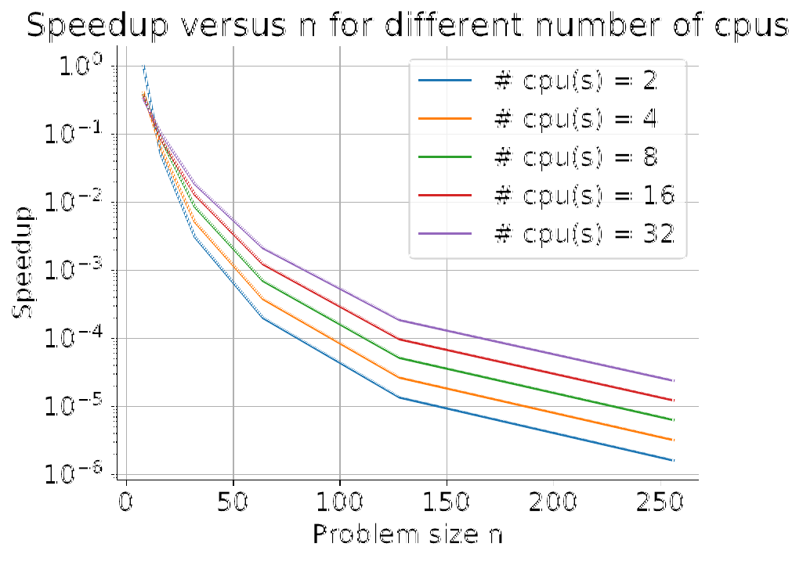
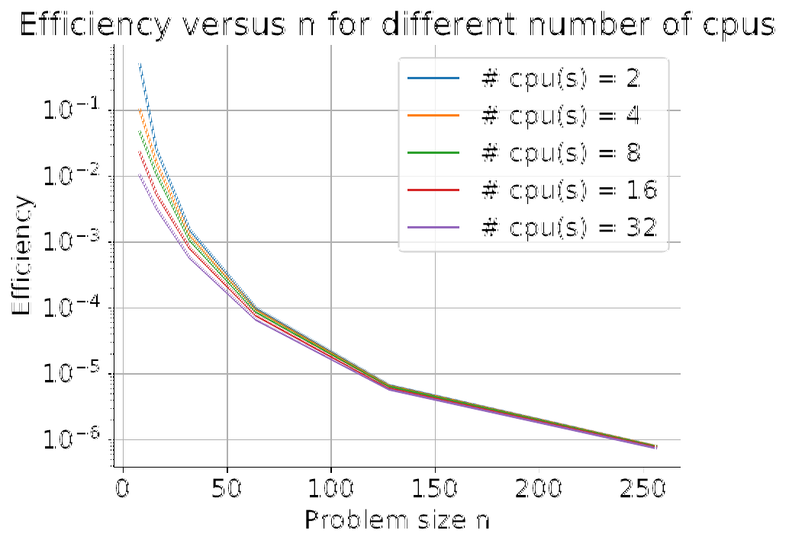
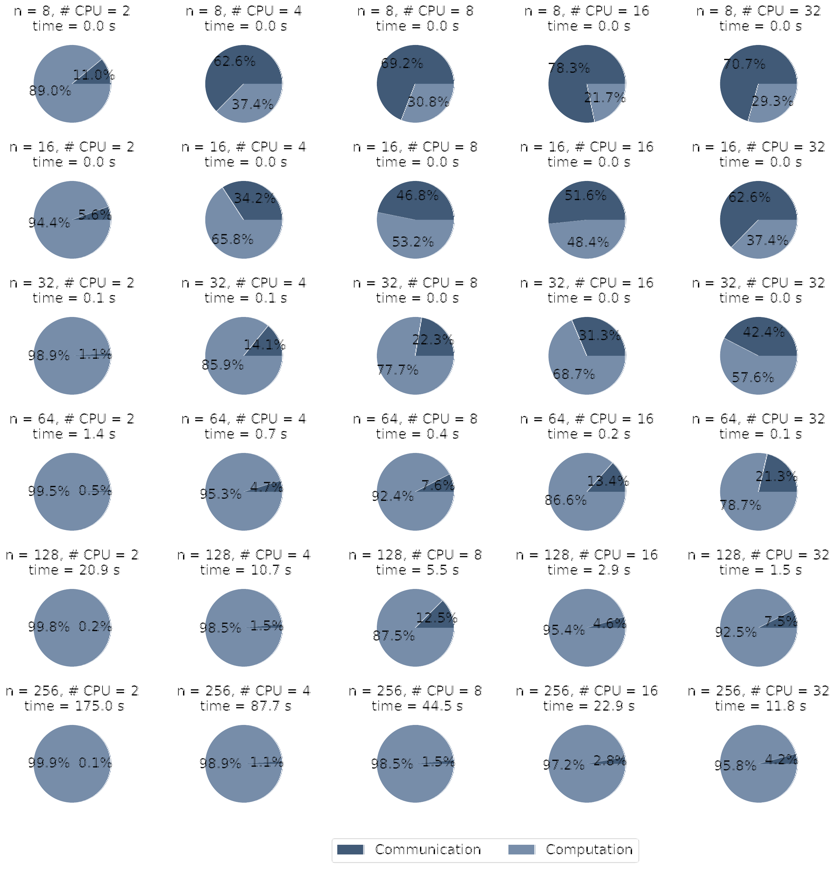
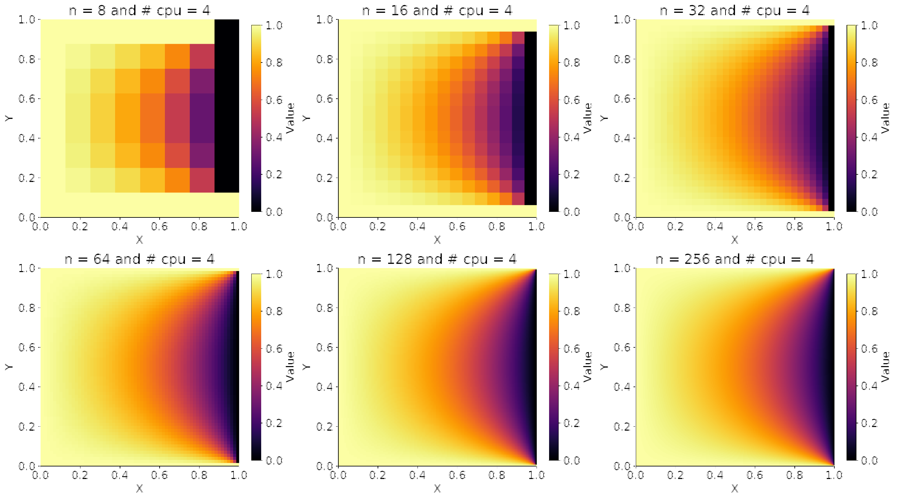

Time to solution
Runtime drops clearly for medium and large grids. In the report, doubling the
number of CPUs for n > 16 gives roughly a factor-of-two reduction
in time.
Project
This project studies a parallel Jacobi solver for the 2D Poisson equation using MPI. The main question is practical: when does adding processors meaningfully reduce runtime, and when does communication overhead start to limit the gain?

Runtime drops clearly for medium and large grids. In the report, doubling the
number of CPUs for n > 16 gives roughly a factor-of-two reduction
in time.

MPI helps most once the problem is large enough to amortize communication and synchronization costs.
For medium and large problems, the parallel solver delivers visible time savings because the computation dominates the communication cost.
For small grids, adding more processes can hurt efficiency because startup and synchronization overhead become too large relative to the actual work.
MPI is not automatically faster. The gain appears when the workload is large enough to keep each process busy and make communication comparatively cheap.
This behavior is consistent with Amdahl's law: if a fraction of the computation
remains serial, then the total speedup cannot grow indefinitely with the number of
processors P. In this project, the measured SP curves improve
when computation dominates, but they stop following ideal scaling once communication
and synchronization become significant.

Efficiency drops when the problem is too small or the process count is too high, because the parallel overhead becomes harder to justify.

As the grid is refined, computation takes a larger share of the total time. This full-size figure makes the communication and computation proportions readable across problem sizes and CPU counts.
The numerical task is the 2D Poisson equation on a square domain, discretized on a regular grid and solved iteratively with a Jacobi method distributed across MPI processes.

The solution preview above is the same visual used for the homepage miniature and gives quick context for what the solver computes before focusing on performance.
The implementation uses a Jacobi iteration in C++ with MPI-based domain decomposition. Each process updates its local subdomain and exchanges boundary information with neighboring processes.
The performance study compares runtime, speedup, efficiency, and the relative weight of computation versus communication across several grid sizes and process counts.
See the full report and source code below for the derivation, implementation details, experimental setup, and complete discussion.
Full PDF report with methodology, figures, and discussion.
Complete source code for the MPI solver and plotting workflow.